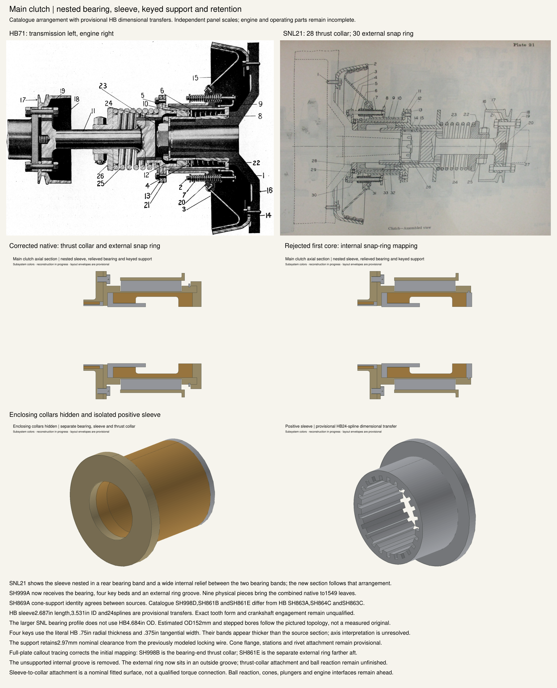

Full-plate callout tracing corrects the initial end-ring mapping: 28 is the SH998B thrust collar, while 30 is a separate external SH861E ring. The corrected and rejected sections use independent scales. HB/SNL transfers, key thickness and attachment details remain approximate; cones, ball reaction and engine interfaces are unfinished.
